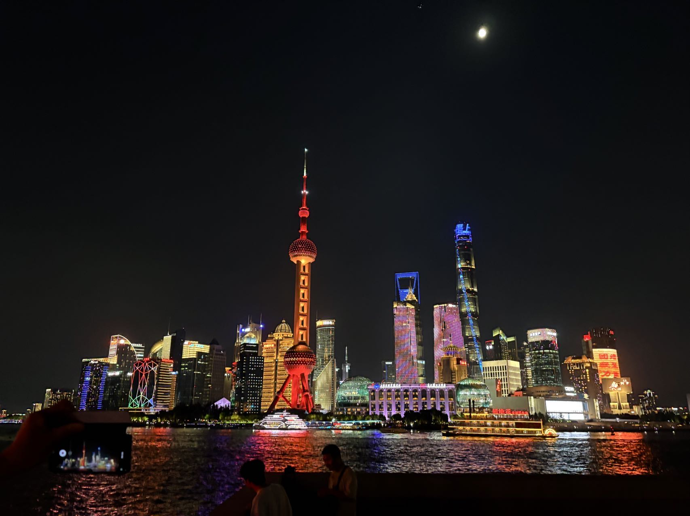
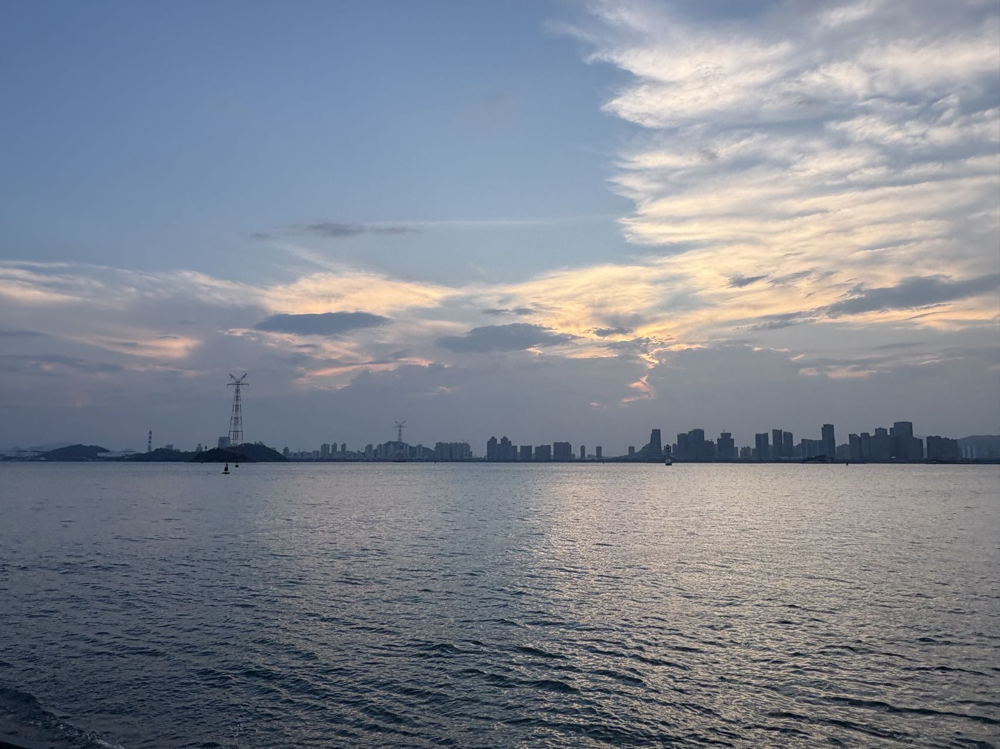
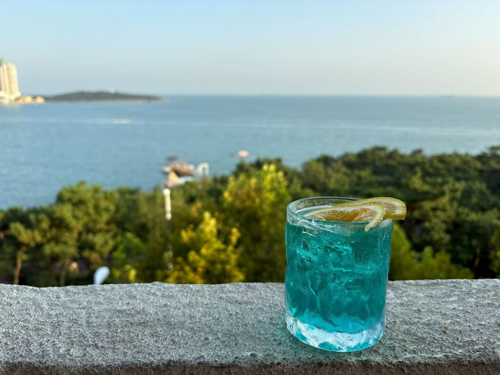

行万里路

这里是上海
在去年国庆的时候，我去上海看望我的好朋友。上海给人的第一印象就是繁华，高楼大厦，灯火辉煌。但是同时上海又是一座非常包容的城市，五湖四海的人们在这里浪费自己的青春，像上海展现自己的梦想和野心。大概就是，在上海你不用为自己异于常人的部分而羞愧吧。作为游客，上海是一座非常成熟的旅游城市，走在外滩，黄金一般铺满了江面的灯光，或者是去东方明珠打卡最火拍照机位，豫园和城隍庙又彰显着古韵。由于是去看望朋友，还顺便打卡了“上海理工大学”，走在她的校园，好像又回到了高中呢。期待可以再次去上海！

蓝天碧海飞白鹭 波光云影泛渔舟
今年国庆，和朋友一起去了厦门。散步在厦门的街道，三角梅如瀑布一般悬挂在高架桥边，为城市增添了一抹玫红色。走到海湾公园，面朝大海，碧海蓝天。海水泛着湛蓝随风起伏，厦门的海大概是由于在城市旁的缘故，显得十分平静，会让我想到长江，但是和长江又是不一样的，心里知道她是海所以就算可以看到对岸的陆地，也会在心里想起海的广阔和天空一般的蓝色。在厦门最开心的时刻就是和朋友一起走在演武大桥，向前看是双子塔，向右看可以看到鼓浪屿上面的郑成功雕像，向左看是我的好朋友，这是我们在一起的第七年。

红瓦绿树，碧海蓝天
高考结束了，和家人去了心心念念的青岛。高中时很喜欢八月长安的《最好的我们》以及《你好，旧时光》，这两本书改编的电视剧取景地之地就在青岛。所以当我走在八大关时，好像能听到耿耿余淮说笑的声音。也正是因为这本书所以对高中时候充满了期待，会不会遇到我的余淮，但是显然我们高中没有这样子的人。在鲁迅公园对面，有一家“八月小馆”，去阳台就可以一面欣赏海景一面喝饮品。我点的是“陈桉的蓝水”出自你好旧时光里的故事。你现在找到能心甘情愿献出蓝水的人了吗，陈桉。